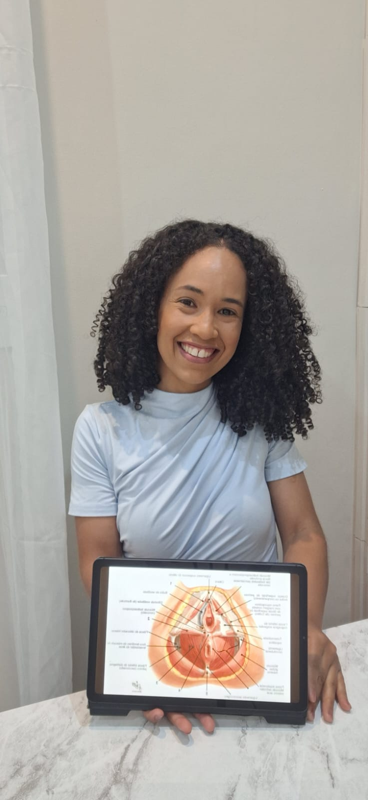

Quando procurar a Fisioterapia Pélvica?
Se você percebe sinais como:
- Escapes de urina ao tossir, espirrar ou correr
- Sensação de peso na região íntima
- Dor durante a relação sexual
- Dificuldade para esvaziar a bexiga ou o intestino
- Constipação crônica
- Mudanças na região íntima após o parto ou na menopausa
Esses são sinais de alerta que indicam alterações no assoalho pélvico.
O que a Fisioterapia Pélvica trata?
- Incontinência urinária e fecal
- Dor pélvica crônica
- Prolapso de órgãos pélvicos
- Preparo para o parto e reabilitação pós-parto
- Disfunções sexuais (dor, vaginismo, anorgasmia)
- Reeducação perineal na menopausa
- Constipação intestinal
- Recuperação após cirurgias ginecológicas ou urológicas
Como é a consulta?
Você será recebida em um ambiente acolhedor, com respeito, empatia e privacidade.
A consulta inclui:
- Conversa detalhada e escuta ativa
- Avaliação funcional (não invasiva, se preferir)
- Plano de tratamento 100% personalizado
- Exercícios para fortalecimento do assoalho pélvico
- Técnicas de relaxamento e liberação da pelve
- Reeducação postural e respiratória
- Treinamento funcional para atividades do dia a dia
Modalidades de Atendimento
- Fisioterapia Domiciliar: conforto e praticidade.
- Gerontologia: foco na autonomia do idoso, mobilidade e prevenção de quedas.
- Fisioterapia Pélvica: para mulheres de todas as idades.
Locais de atendimento:
- Consultório: Rua Rogério Mansur Japur 185, Conceição das Alagoas - MG
- Atendimento domiciliar em Conceição das Alagoas - MG
- Atendimento online para todo o Brasil
Quem é Joselma Dias?

Sou fisioterapeuta graduada pela Universidade de Uberaba. Desde a faculdade, sou apaixonada pela saúde da mulher, em especial a fisioterapia pélvica.
Meu propósito é oferecer um espaço onde cada mulher se sinta segura, ouvida e respeitada, com tratamentos eficazes que transformam vidas.